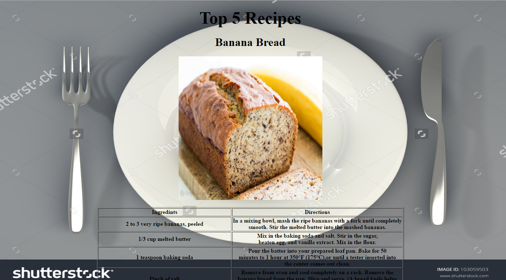
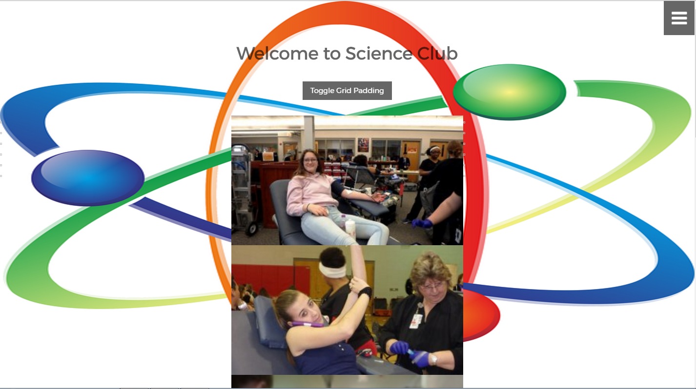

Home
About
Why Github
Past Work
Top 2 Work
What I Learned
Java
This was a site of the Top 5 Recipes.
See the full site
This was a site for the science club for people to see what they are.
See the full site